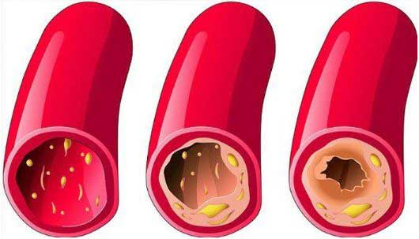
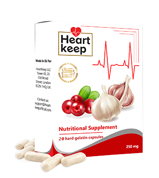

Ayon sa isang 89 na taong gulang na cardiologist, ang edad ay hindi depekto sa buhay at kalusugan. Ibinahagi niya rin ang sikreto ng kanyang napakalusog na istilo ng pamumuhay at haba ng buhay.
Si Angelica Morales, isang prominenteng cardiologist sa Pilipinas ay iniwan ang trabaho nang siya ay mag-70 taong gulang. Gayunpaman, hindi siya nahirapan sa kanyang matandang edad, o nakaapekto sa kanyang pisikal o mental na kalusugan. 19 na taon na siyang nagretiro at siguro ang pension ay hindi niya masyadong pinapahalagan, pero sa edad na 89 na taong gulang siya ay mukha at tila 80 taong gulang.
Ang sikreto sa likod ng mahabang buhay sa isang taong may edad ay nasa dinadaluyan ng dugo. Hangga't malinis at malusog ito, pwede kang mabuhay ng hanggang 120 taon at pwedeng higit pa. At ang retiradong cardiologist ay isang buhay na testamento sa epekto nito.
Nakapanayam siya ng isa sa mga reporter namin. Nagbigay si Dr. Morales ng detalyadong paliwanag sa mga pamamaraan na sinusuod niya para matiyak na malinis ang mga daluyan ng dugo, na dahilan sa likod ng mahaba niyang buhay.
Nakisalamuha siya sa maraming tao sa ika-89 niyang kaarawan.- - Nang tanungin, "Dr. Morales, madalas mong pinapaintindi sa amin na ang malinis na daluyan ng dugo ay mahalaga para sa mabuting kalusugan. Ano ang dahilan mo dito? "
- “Malinaw ang sagot dito. Ang function ng lahat ng lamang loob ng tao at sistema ay nakasalalay sa kalidad ng sirkulasyon ng dugo. Kung sakaling hindi mo alam kung ano ang sirkulasyon ng dugo, ito ang supply ng hangin at sustansya at responsable din sa paglabas ng carbon dioxide at maduduming bagay na mula sa metabolismo sa mga lamang loob. Sa panahon ng pagkabata at kabataan, tayo ay napakaaktibo, ang mga daluyan ng dugo ay elastic at napakalinis pa kaya lahat ng organo ng katawan ay perpektong malusog. Kapag unti-unti nang nagsimula ang pagtanda, hindi na tayo aktibo, kaya ang mga daluyan ay bumabara. Ilang kadahilanan ang dahilan dito, katulad ng paninigarilyo, hindi magandang nutrisyon, pamumuhay sa hindi malusog na kapaligiran, at ang mga natural katulad ng lipid deposition na nakikitang nagaganap sa bawat tao habang tumatanda”
Isipin mo ang tubo, na puno ng kalawang, ang resulta ng tubig na dumadaloy dito ay tumataas ang presyon at sumasama ang lasa. Ipinaliwanag nito kung ano ang nangyayari sa mga baradong ugat. Kapag ang kolesterol at iba pang sangkap ay idineposito sa daluyan ng dugo, ang pagtaas ng presyon ng dugo na syempre ang pangunahing sanhi ng hypertension dahil marumi na ngayon ang dugo at ang sirkulasyon ay lumalala. Ang resulta nito ay lahat ng iba pang organo sa katawan ay nahihirapan din, at ito ang bumubuo sa katawan ng tao.
Habang tumatagal unti-unti tayong nagkakaedad. Pero hangga't pinapanatilng malinis at malusog ang mga daluyan ng dugo paminsan-minsan, pwedeng mabuhay isang tao ng hanggang 120 taon nang hindi nagkakasakit. Malalaman mo na lahat ng organo at ang napakahalaga ay ang utan ay gumagana nang mabuti. Nangangahulugan na kapag pinanatiling malinis ang daluyan ng dugo, bubuti ang kalusugan at hahaba ang buhay.
 Hindi ito teorya dahil ito ay isinasagawa ko at inirerekomenda sa lahat ng pasyente ko, at karamihan sa tumanggap ng payo ko ay nabuhay nang mas mahaba kaysa sa mga kakilala nila.“Anong mga sakit ang sanhi ng pagbara sa daluyan ng dugo?”
“Tulad ng sinabi ko kanina, lahat ng organo sa katawan ay nahihirapan din dahil dito, pero ang mga organo na unang naaapektuhan ay ang direktang nauugnay sa sirkulasyon ng dugo, na tinatawag na cardiovascular system.”
Kapag ang mga daluyan ng dugo ay dumumi, may iba pang sakit na lalabas bilang relusta tulad ng nakalista sa ibaba;
- Atherosclerosis: Isang sitwasyon kung saan ang mga daluyan ay tumitigil sa pag-function, ang maliliit na ugat ay tuluyang bumabara habang ang mas malalaking ugat ay napupuno ng kolesterol.
- Kakulangan ng dugo sa puso: : Ito ay dahil sa patuloy na pagkaubos ng dugo sa coronary vessel na humahantong sa kontaminasyon ng vascular ng mga ugat at arterya.
- Altapresyon: Kapa gang daluyan ng dugo ay sumikip dahil sa pagbara, nagiging dahilan ito para biglang tumaas ang presyon ng dugo.
- Paglaki ng ugat na varicose: Madalas ay nangyayari sa mga babae, nagiging sanhi ito ng pananakit ng binti. Isa sa pwedeng mangyari dahil sa kondisyong ito ay ang pagkakaroon ng almoranas.
- Stroke: Kapag napinsala ang supply ng dugo sa tisyu ng utak, ang resulta ay ang dulo ng nerve ay magsisimulang mamatay na hahantong sa paghinto ng function ng ilang organo.
- Venous at Arterial thrombosis: Ang pamumuo ng dugo ay makikitang nagsisimulang mabuo sa daluyan ng dugo kung ang kontaminasyon ay tumagal ng mahabang panahon at pwedeng humantong sa buong pagkapinsala ng daluyan, na nagiging dahilan para mamatay ang bawat selyula ng isang organo o ng isa pa. Sa sitwasyon kung saan ang thrombus ay makapasok sa dugo, pwede itong magresulta sa pagbara ng daluyan ng dugo sa puso na responsible sa atake sa puso at 70% sa mga kaso ng atake sa puso ay palaging humahantong sa kamatayan.
Mga uri ng sakit sa puso
Lumaking ventricle

Pagpalya ng puso
Maraming kamatayan na may kaugnayan sa kalusugan ay mas madalas sanhi ng pagbara sa cardiovascular kaysa sa iba pang karamdaman kung pagsasama-samahin. Alam ng mga doktor ang tungkol dito at alam din nila ang kahalagahan ng paglilinis ng daluyan ng dugo, pero sa kasamaang palad, hindi ito regular na kasanayan sa larangan ng medikal. Para gamutin ang hypertension, karaniwang nireresetahan ng tableta para makatulong sa pagbaba ng presyon ng dugo. Gayunpaman, ang mga tabletang ito ay pansamantalang gamot lamang at hindi pinapagaling ang kondisyon, ang tanging paraan lamang ay linisin ang daluyan ng dugo. Sa higit kalahating siglo, ang mga tao sa kanlurang bahagi na nasa edad 40 pataas ay nangangailangan ng pamamaraang ito at may kamalayan sa kahalagahan nito. Nakakapagtaka na hindi natin pinapansin ang kaugnayan nito.
“May mga sintomas ba para malaman agad na may bara ang mga ugat?”
“Siyempre meron, kabilang dito ang:”
- Pananakit ng ulo
- Mabilis mapagod
- Hirap makatulog
- Pagkamalilimutin
- Mataas na presyon ng dugo
- Hirap sa paghinga at pananakit ng dibdib
- Lumalabong paningin at paghina ng pandinig
- Pananakit ng kalamnan at kasu-kasuan
Hindi talaga mahalaga kung nakakaranas ka ng alinman sa mga sintomas sa itaas o hindi, sa sandaling dumating ka sa 30 taon pataas, mahalaga na linisin ang mga ugat ng hindi bababa sa isang beses sa bawat 5 taon. Malaking tulong ito para mabuhay ka nang malusog.
Sa katunayan, ang naiipon ang mga bara sa daluyan ng dugo ng mas mabilis kaysa sa naiisip natin, lalo na sa matatanda. Hindi lamang ito resulta ng pagkain ng hindi maganda, sa pagkain ng tulad ng sausage o kahit na itlog kung minsan ay gumagawa ng deposito ng kolesterol. At habang tumatagal, ang mga depositong ito ay naiipon.
“ Pwede mo bang ibahagi ang sikreto mo kung paano mo nililinis ang daluyan ng dugo?”
Hanggang kamakailan lamang, inabot ako ng maraming buwan sa proseso ng paglilinis ng daluyan ng dugo. Gumugol ako ng oras para pumili ng ilang halamang gamot, naghanap sa ilang merkado, ang iba ay inorder ko online at pagkatapos ay inihanda ko na. Ito ay isang pamamaraan na hindi ko na sinusunod dahil ilan sa mga banyagang kasamahan ko sa Institute of Cardiology ay may nakagawa kamakailan lamang ng napakahusay at abot-kayang suplemento, na pangunahing para malinis ang daluyan ng dugo na tinatawag na HeartKeep. Ang layunin nito ay gawing normal ang presyon ng dugo at pagbutihin ang hypertension pero magagawa ito sa paglilinis ng mga arterya at ugat. Sa gayon ay tinutupad nito ang layunin na mamuhay ng mahaba at malusog.
 Umorder ng HeartKeep na may 50% diskwentoAng HeartKeep na ito ay mahusay na nililinis ang mga bara sa mataas na daluyan ng dugo sa loob lamang ng isa hanggang dalawang linggong patuloy na paggamit.
Gusto kong matiyak na alam ninyo na ang suplementong ito ay walang kemikal at naglalaman lamang ng purong katas mula sa mga halaman na kapaki-pakinabang sa paglilinis ng mga daluyan ng dugo. Kaya hindi ito mapanganib at maganda sa katawan.
Tulad ng maraming pasyente na nakikipag-ugnayan pa rin sa akin para kumonsulta at sa pamamaraan ng paglilinis ng dugo. Sinimulan kong irekomenda ang suplementong ito at napakalaking tulong nito sa ngayon.
Maaari mong bisitahin ang site ng Institute Of Cardiology para sa opisyal na istatistika ng paglilinis ng daluyan ng dugo na nakuha mula sa mga resulta ng klinikal na pananaliksik. Ang mga pasyente na lumahok sa pag-aaral ay humigit-kumulang 2000 at lahat ay umiinom ng HeartKeep.
Resulta ng survey:
- Ang presyon ng dugo ay bumalik sa normal pagkatapos uminom ng suplemento sa loob lamang ng dalawang araw. Tulad ng isinaad ng 99% kalahok sa pag-aaral.
- 97% ng kalahok sa survey ay napansin ang pagganda ng tibok ng kanilang puso.
- Ayon sa nasa 99% ng nakibahagi sa survey, ang kolesterol ay ganap na nalinis.
- Mahusay na gamot sa iba pang malalang sakit.
- Lahat ng kalahok ay nag-ulat ng pangkalahatang pagbuti sa kanilang kalusugan.
- ⦁ Lahat ng kalahok ay hindi nakaranas ng anumang masamang epekto sa pag-inom ng HeartKeep.
“ Magkano ang HeartKeep at saan ito mabibili?”
Sigurado akong alam mo na nagretiro na ako at ang presyo ng gamot ay medyo mahal na sa pangkalahatan. Kaya wala akong nakikitang dahilan sa pagrekomenda ng mamahaling gamot sa sinuman. Ang HeartKeep ay talagang abot-kaya at kasalukuyang ibinebenta sa may diskwentong presyo na 50%
Ang suplementong ito ay karaniwang responsable sa paglaban sa hypertension.
Nasa ibaba ang iba pang detalye sa kung paano makakabili ng HeartKeep at maipadala ito sa anumang bansa, upang mag-order ng produktong ito ang kailangan mo lang ay:
- Punan ang form sa opisyal na website.
- Isang coordinator ang makikipag-ugnayan para kumpirmahin ang lugar kung saan ito ihahatid.
- Ang oras ng paghahatid ay karaniwang nasa 1 hanggang 5 araw at may tagapaghatid na darating sa lugar mo para ihatid ang order mong HeartKeep.
Para matiyak na malinis ang mga daluyan ng dugo, personal kong inirerekomenda na ulitin ang paggamit nito paminsan-minsan sa bawat 1 hanggang 2 taon. Pangunahing pangangailangan para sa mga nakatatanda. Ang pagkakaroon ng malinis na daluyan ng dugo ay garantiya sa mabuting kalusugan.
“Salamat sa oras na binigay mo para makibahagi sa napaka-detalyado at nagbibigay kaalamang panayam, Salamat, Dr. Morales”
Sa isang usapan na hindi nakarekord kasama si Dr. Morales, sinabi niya na sobra pa rin siyang nagmamalasakit sa hardin niya na maraming gulay at paminsan-minsan ay tumutulong siya sa mga anak niya, na magretiro rin. Ang kanyang 91 taong gulang na asawa ay sinasamahan siya sa taunang paglilinis ng daluyan ng dugo. Ang opinyon ng doktor para sa kanilang dalawa ay sa palagay niya ay matagal na siyang namatay katulad ng karamihan sa kilala niya kung hindi siya dumadaan sa proseso ng paglilinis ng daluyan ng dugo.
Mahalagang Paalala!
Mabibili lamang ang HeartKeep sa opisyal na website nito at wala ng iba pa.
50% Diskwento!
Magtatapos ang promosyon sa:
PRESYO ₱1,950
Mga Komento
Patrick Cruz Pasig
“Halos isang buwan na akong umiinom ng HeartKeep, at bagaman hindi araw-araw. Di-nagtagal ay mas umayos ang pakiramdam ko. Ang buong immune system ko ay naging mas malakas, sa lakas ko ngayon, pakiramdam ko 10 taon akong mas bata. 72 taong gulang na talaga ako.”
Angelica P. Quezon
“Nalaman ko lahat ng kailangan kong malaman tungkol sa HeartKeep ng detalyado sa kanilang opisyal na site. Aaminin ko, sobrang nakakabilib at kahanga-hanga din.”
Joshua
“Simula nang uminom ako ng HeartKeep, hindi ko na kailangan ng iba pang tabletas at gamot. Ginawang normal ng HeartKeep ang presyon ng dugo ko.”
Jessa Mae
“Hindi na tumataas ang presyon ng dugo ko. Nagsimula akong uminom ng HeartKeep 1 buwan na ang nakakaraan at mas maayos ang pakiramdam ko kapag umiinom ako nito. Maraming salamat!”
Rolly Rimando
“Sinubukan ko rin ito. EPEKTIBO TALAGA!!!”
Trisha Taguig
“Mga 2 buwan na ang nakakaraan nang uminom ako ng HeartKeep para linisin ang daluyan ng dugo ko. At sobrang bilib ako sa resulta. Napansin kong madali akong mapagod at madalas ay dahil sa bara sa daluyan ng dugo, pero ngayon masigla na ako. Ngayon nakakagawa ako ng dalawang beses na mas maraming trabaho sa isang araw, nakakaranas din ako ng sobrang pananakit ng ulo, pero wala na din lahat ng ito. Ang pangkalahatang kalusugan ko ay gumanda, kaya hindi ako nag-alinlangang umorder ulit, sinamantala ko ang stock. Sobrang laki ng pasasalamat ko. Salamat.”